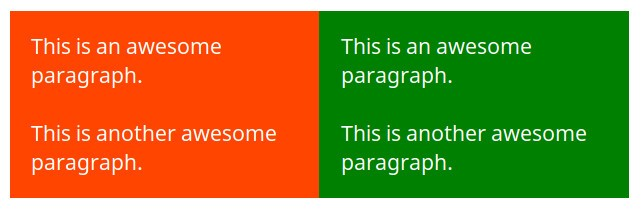

To begin with let's assume that you are the a block of content or element within a HTML page
The clothes you wear can be equated to border in CSS
The space between your body and your clothes can be equated to padding.
Say you are inside a confined box. So the space between your clothes and the limits of the box is margin..
They are all used to create gaps around elements, but they differ in their method of creating that gap. Margin accommodates the gap
by pushing adjacent elements away from it, while Padding accommodates the gap by either growing its own size or by shrinking the size of content inside it.)
USE PADDING WHEN:
You don’t want your content to touch the edges of the container, or also if You want to increase the size of the element. Another Exampleto use padding could be when you need to increase the size of an element. (e.g a button)

USE MARGIN WHEN:
You need to create some extra space around an element, or you don’t want the specified element to be touching other elements around it:
USE BORDER WHEN:
When you need to emphsise and element, the border is between the margin and padding of an object, it's the strip that goes around your element of the content: